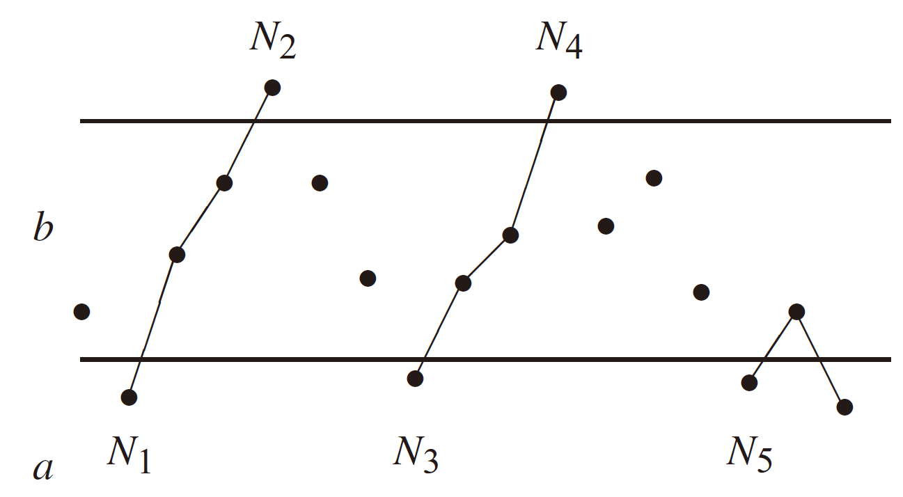

Martingale¶
Reference
- Probability Theory and Examples, Rick Durrett
If you choose to stop playing at some bounded time \(N\), then your expected winnings \(EX_N\) are equal to your initial fortune \(X_0\).
Radon-Nikodym Theorem¶
We shall talk about signed measure, which differs from measure in that it takes values on \((-\infty,\infty]\) or \([-\infty,\infty)\). It cannot be both \(-\infty\) or \(\infty\) since it would cause \(\alpha(A)+\alpha(B)\) to be ambiguous. We ignore the second situation for simplicity.
definition of signed measure
\(\alpha\) is said to be a signed measure if
(i) it takes values on \((-\infty, +\infty]\),
(ii) \(\alpha(\varnothing)=0\),
(iii) if \(E=\bigcup_n E_n\) is a disjoint union then \(\alpha(E)=\sum_n \alpha(E_n)\).
Here gives some examples about signed measure.
Example. Assume \(\mu\) is a measure, \(f\) is a function with \(\int_A f^- d\mu<\infty\), define
Show that \(\alpha\) is a signed measure.
Example. Assume \(\mu_1\) and \(\mu_2\) are measures with \(\mu_2(\Omega)<\infty\), define
Show that \(\alpha\) is a signed measure.
The above conclusion holds by sigma-additivity of integral and measure. The only work is left to show that disjoint additivity holds at \(\alpha(E)=\infty\).
\(\square\)
A set \(A\) is positive if for all its subset \(E\), \(\alpha(E)\geq 0\). A set \(A\) is positive if for all its subset \(E\), \(\alpha(E)\leq 0\).
Example. Show that In Example for integral-signed-measure, \(A\) is positive iff
-
Necessary. Choose subset \(A\cap \{f(x)<0\}\) yields the result.
-
Sufficient. Decompose any subset \(E\) with \(E\cap \{f(x)<0\}\) and \(E\cap \{f(x)\geq 0\}\) and complete the proof.
\(\square\)
Hahn decomposition
Assume \(\alpha\) is a signed measure. There exists a positive set \(A\) and a negative set \(B\) such that \(\Omega=A\cup B\) and \(A\cap B=\varnothing\).
Let \(c=\inf\{\alpha(B): B \text{ is negative}\}\leq 0\). Choose \(\{B_n\}\) such that \(\alpha(B_n)\searrow c\). Thus \(B=\bigcup_n B_n\) is a negative set by Lemma 1: Property of positive/negative set. We claim \(A:=\Omega-B\) is a positive set. We show by contradiction. If not, then there exists a subset \(E\) of \(A\), with \(\alpha(E)<0\). Then by Lemma 2: Non-positive set must have a pure-negative subset, there exsits a negative set \(F\subset E\subset A\) with \(\alpha(F)<0\). So \(B\cup F\) is also a negative set by Lemma 1. Thus
which contradicts!
\(\square\)
The following result is the same for negative sets.
(i) Every subset of a positive set is positive.
(ii) If \(\{A_n\}_{n\geq 1}\subset \Omega\) are positive sets, then \(A:=\bigcup_{n} A_n\) is also a postive set.
- Proof. (i) is trivial. For (ii), We have to use disjoint decomposition of \(A\) to decompose any subset \(E\), thus gives the result using sigma-additivity. Indeed, let
so we have \(B_n\) is still a positive set by (i) and mutually disjoint. We have \(\bigcup_n A_n =\bigcup_n B_n\). For any subset \(E\) of \(A\), let \(E_n = E\cap B_n\) is also a positive set, and \(E=\bigcup_n E_n\). By sigma-additivity, we have
Notice that subadditivity gives an opposite direction, which fails here.
\(\square\)
Assume \(E\) is a measurable set with \(\alpha(E) < 0\), then there exists a subset of \(E\), denoted by \(F\), which satisfies \(F\) is a negative set with $\alpha(F)< 0 $.
Remark here that \(\alpha(F)\) is strictly less than \(0\), which is given by \(\alpha(E)<0\).
- Proof. If \(E\) is nagative, we are done. Suppose \(E\) is not a negative set, which means \(\exists E_1\subset E\) s.t. \(\alpha(F_1)> 0\). Choose a smallest integer \(n_1\) such that \(\alpha(E_1)>1/n_1\) holds for a plus-sign set \(E_1\subset E\). Let \(F_1=E-E_1\). If \(F_1\) is a negative set, we are done. Otherwise, choose a smallest integer \(n_2\) such that \(\alpha(E_2)>1/n_2\) holds for a plus-sign \(E_2\subset F_1\). Continue the procedure, we have
with \(n_1>n_2>\cdots\). Let \(n\rightarrow \infty\), we have a limit set \(F=E-\bigcup_n E_n\). By construction, we have \(E_i\cap E_j=\varepsilon\) for \(i\neq j\). So by sigma-additivity (definition of signed measure),
Thus \(\alpha(F)\leq \alpha(E)<0\). Since \(E\) is finite-measure, so \(\sum_{n} \alpha(E_n)\) converges, therefore \(\alpha(E_n) \rightarrow 0\) and \(n_i \rightarrow \infty\) as \(i\rightarrow \infty\). Now we claim \(F\) is a negative set, for if not, we choose an integer \(N\) for a plus-sign subset \(F'\), which contradicts!
\(\square\)
Example. Show that in example for integral-signed-measure, \(A\) could be
Two measures \(\mu_1\), \(\mu_2\) are said to be singular with each other, if there exsits a set \(A\) with \(\mu_1(A)=0\) and \(\mu_2(A^c)=0\). Now the following theorem gives the uniqueness for a signed measure, which is a subtraction of two mutually singular measures.
Jordan decomposition
Assume \(\alpha\) is a signed measure, then there exist unique measures \(\alpha_+\) and \(\alpha_-\) such that \(\alpha=\alpha_+-\alpha_-\) with \(\alpha_+\) and \(\alpha_-\) mutually singular.
- Existence. According to a signed measure \(\alpha\), we have \(\Omega=A\cup B\) by Hahn decomposition. Define
which turn out to be measures. Choose \(A\) and we have \(\alpha_+(A^c) = 0\) and \(\alpha_-(A)=0\), therefore \(\alpha_+\) and \(\alpha_-\) are mutually singular.
- Uniqueness. Here the uniqueness is given by equivalence of measure, disregarding zero-measure situation. Assume \(\alpha=\nu_1-\nu_2\), and one corresponding set pair \(C, D\) for its Hahn decomposition \(\Omega=C\cup D\). Let \(\nu_1(C)=0\). So we have \(A\cap D\), \(B\cap C\) are null set, meaning \(\alpha_+(A\cap D)=\alpha(A\cap D)=0\). Thus
which gives \(\alpha_+=\nu_1\). Similar logic gives \(\alpha_-=\nu_2\) and we complete the proof.
\(\square\)
Now the following construction of \(g\) and decomposition of \(\nu\) plays an important role in the proof of the final theorem.
Lebesgue decomposition
Assume \(\nu\), \(\mu\) are \(\sigma\)-finite measure, then there exsits \(\nu_r\) and \(\nu_s\) such that \(\nu=\nu_r+\nu_s\), where \(\nu_s\) is singular with respect to \(\mu\), and
Since \(\Omega=\bigcup_n \Omega_n\) and by condition, we assume without loss of generality, \(\nu\) and \(\mu\) are finite measure on \(\Omega\). Let
- We first claim that if \(g,h\in \mathcal{G}\), then \(g\lor h\in \mathcal{G}\). Indeed, let \(A=\{g<h\}\), then for each \(E\subset \Omega\),
- Then we formulate a function \(h\) and define the correponding measure \(\nu_r\) like in \(\ref{nu-r-mu}\). Actually, for each \(E\), define \(\mathbb{k}=\sup\{\int_E g d\mu: g\in \mathcal{G}\}\). Choose \(\{g_n\}\) such that \(\int_E gd\mu \geq \mathbb{k}-\frac{1}{n}\). Define \(h_n=g_1\lor\cdots\lor g_n\). Then \(h_n\geq g_n\) and \(h_n\nearrow h\). By Levy's Theorem, we have
Now we let \(\nu_r=\int_E h d\mu\) and \(\nu_s=\nu-\nu_r\).
- We finally have to show that \(\nu_s\) is singular with respect to \(\mu\). This is a little tricky. For all \(\varepsilon\), by Hahn decomposition, we have \(\Omega=A_\varepsilon \cup B_\varepsilon\) with respect to signed measure \(\nu_s-\varepsilon \mu\) (Let \(\nu_s-\varepsilon \mu(A_\varepsilon)\geq 0\)). We contend that \(\mu(A_\varepsilon)=0\). Indeed, let \(k=h +\varepsilon 1_{A_\varepsilon}\), then
which means \(k\in \mathcal{G}\). However, \(h\) has reached the superium, so \(\mu(A_\varepsilon)=0\).
Choose \(\varepsilon_n=1/n\), and define \(A=\bigcup_n A_n\). We show that \(A\) makes the singularity of \(\nu_s\) and \(\mu\). Since \(\mu(A)\leq \sum_n \mu(A_{1/n})\) we have \(\mu(A)=0\). We claim that \(\nu_s(A^c)=0\) for if not, \(\nu_s(A^c)>0\), then \((\nu_s-\varepsilon \mu)(A^c)>0\) for some \(\epsilon\), which contradicts, since \(A^c\subset B_\varepsilon\).
\(\square\)
We call measure \(\nu\) is absolutely continuous with measure \(\mu\), denoted by \(\nu \ll \mu\), if \(\mu(E)=0\) implies \(\nu(E)=0\). Example for integral-signed-measure gives a method to define a measure which is absolutely continuous with respect to another measure, which we would use in existence of conditional expectation.
Radon-Nikodym Theorem
Assume \(\nu\), \(\mu\) are \(\sigma\)-finite measure, and \(\nu\) is absolutely continuous with respect to \(\mu\), then there exists a \(g\geq 0\), such that \(\nu(E)=\int_E g d\mu\). And for uniqueness, it is a equivalent category that \(g=h\), \(\mu, a.e.\)
The function \(g\) is usually denoted by \(d\nu/d\mu\).
By Lebesgue decomposition, we have two measure \(\nu_r\) and \(\nu_s\), with \(\nu_s\) singular with respect to \(\mu\), \(\nu_r(E)=\int_E g d\mu\).
We first show that \(\mu_s\equiv 0\). Indeed, since \(\nu\) is absolutely continuous with \(\mu\), then for \(A\) which follows that \(\nu_s(A^c)=0\) and \(\mu(A)=0\), it follows that \(\nu(A)=0\), so \(\nu_s(A)=0\), meaning \(\nu_s\equiv 0\). So \(\nu=\nu_r\).
For uniqueness, suppose \(g\) and \(h\) both follows that \(\nu(E)=\int_E g d\mu=\int_E h d\mu\), then \(\int_E g-h d\mu\). Choose finite-measure set \(E\subset \{g>h, g\leq n\}\) for each \(n\), then we have \(\mu(g>h, g\leq n)=0\) for each \(n\). So \(\mu(g>h)=0\). Similar logic gives \(\mu(g<h)=0\) and complete the proof.
\(\square\)
Example. Show that the jacobi function \(d\nu/d\mu\) has the following properties.
(i) Linearity. If \(\nu_1 \ll \mu\) and \(\nu_2\ll \mu\), then \(\nu_1+\nu_2\ll \mu\) and \(d{(\nu_1 +\nu_2)}/d\mu = d\nu_1/d\mu + d\nu_2/d\mu\).
(ii) If \(\nu \ll \mu\) and \(f\geq 0\), then \(\int_E f d\nu=\int_E f \frac{d\nu}{d\mu}d\mu\).
(iii) Transitivity. If \(\pi\ll \nu \ll \mu\), then \(d\pi/d\mu=d\pi/d\nu \cdot d\nu/d\mu\).
(iv) Dual property. If \(\nu\ll \mu\) and \(\mu\ll\\nu\), then \(d\nu/d\mu = (d\mu/d\nu)^{-1}\).
For (ii), use characteristic function, simple function and then for non-negative measurable function.
For (iii), use (ii). For (iv), use (iii).
\(\square\)
Conditional Expectation¶
Definition
Given are a probability space \((\Omega,\mathcal{F}_o,P )\), a \(\sigma\)-field \(\mathcal{F}\in \mathcal{F}_o\), and a random variable \(X \in \mathcal{F}_o\) with \(E|X|<\infty\). We define the conditional expectation of \(X\) given \(\mathcal{F}\), denoted by \(E(X|\mathcal{F})\), to be any random variable \(Y\) that satisfies
(i) \(Y\in \mathcal{F}\), i.e. is \(\mathcal{F}\) measurable.
(ii) for all \(A\in \mathcal{F}\), \(\int_A XdP=\int_A Y dP\). We could write this as
Choose \(A=\Omega\), then we have \(EX=E(E(X|\mathcal{F}))\).
The first thing to be settled is that the conditional expectation exists and is unique.
Existence & Uniqueness
\(E(X|\mathcal{F})\) exists and is unique.
- We first show that CE \(Y\) is integrable. That is, if \(Y=E(X|\mathcal{F})\) is \(\mathcal{F}\) integrable. Let \(A=\{Y>0\}\in \mathcal{F}\), then
and
adding both together, we have \(E|Y|\leq E|X|<\infty\).
- We assume \(X\geq 0\), then define
which is a measure by Corollary 3: Theorem of denumberable additivity of LDCT. Naturally \(\nu\ll P\). Then by Radon Nikodym Theorem, there exsits a measurable function \(d\nu/dP\) such that
Let \(E=\Omega\) and we have \(d\nu/dP\) is integrable, which is a version of \(E(X|\mathcal{F})\).
- General case. That is, \(X=X^+ - X^-\) with \(Y^+=E(X^+|\mathcal{F})\) and \(Y^-=E(X^-|\mathcal{F})\). Then \(Y^+ - Y^-\) is integrable by the former discussion. Then for all \(E\in \mathcal{F}\),
thus \(Y^+-Y^-\) could be one version of \(E(X|\mathcal{F})\) and complete the proof.
\(\square\)
Assume \(Y'\) also satisfies the above definition. Let \(A=\{Y-Y'\geq \varepsilon>0\}\in \mathcal{F}\), then
which gives \(P(A)=0\), meaning \(Y\leq Y'\), a.s., and another direction gives \(Y=Y'\), a.s.. So the uniqueness is an equivalent category in a sense of zero-measure.
Corollary: equivalence fixed on a subset
If \(X_1=X_2\) on \(B\in \mathcal{F}\), then \(E(X_1|\mathcal{F})=E(X_2|\mathcal{F})\) a.e. on \(B\).
Properties¶
Intuitively, we think of \(\mathcal{F}\) as information we have at disposal (for each \(A\in \mathcal{F}\), we know whether or not \(A\) has occured), and \(E(X|\mathcal{F})\) is our best guess of \(X\) based on the information.
Properties of CE
(i) If \(X\in \mathcal{F}\), then \(E(X|\mathcal{F})=X\).
(ii) If \(X\) is independent with \(\mathcal{F}\), then \(E(X|\mathcal{F})=EX\).
(i) is trivial.
(ii) We have an inspiration. Notice that if \(X\) is independent with \(\mathcal{F}\), then for all \(B\in \mathcal{R}\), \(A\in \mathcal{F}\),
So we claim \(E(X|\mathcal{F})=EX\). Condition (i) follows apparently. For condition (ii), we use \(EXY=EXEY\), then \(E(X;A)=E(X1_A)=EX E1_A=E(EX;A)\), and this completes the proof.
From the proof we extract a method for calculating CE, i.e. "guess and verify".
We list two examples regarding notions of CE in undergraduate probability courses. The proof lies in showing that formula satisfies the condition in the definition of CE.
Example. Suppose \(\{\Omega_n\}\) is a finite or infinite partition of \(\Omega\) into disjoint sets, each of which has positive probability. Let \(\mathcal{F}=\sigma(\Omega_1,\cdots)\) be the sigma-field generated by these sets.
(i) Show that
Note that \(E(X;\Omega_n)\) is a value and \(1_{\Omega_i}\) is a measurable function.
(ii) A degenerate but important special case is \(\mathcal{F}=\{\varnothing, \Omega\}\), then \(E(X|\mathcal{F})=EX\). Moreover, recall that \(P(A|\mathcal{G})=E(1_A|\mathcal{G})\), \(P(A|B)=P(A\cap B)/P(B)\), then
A last but common usage is the following definition
where \(X,Y\) are random variables, \(\sigma(Y)\) is the sigma-field generated by \(Y\).
(i) For \(\mathcal{F}\) measurability it is easy to check. For second condition, we only need to consider \(A=\Omega_i\in \mathcal{F}\), since linearity gives the general case. Notice
(ii)
Example. Suppose \(X\), \(Y\) has joint density \(f(x,y)\), i.e. distribution
Suppose \(\int f(x,y)dx>0\) for all \(y\). If \(E|g(X)|<\infty\), then \(E(g(X)| Y)=h(Y)\), where
Now we give some properties as common expectation has.
Theorem for CE
(i) Linearity. \(E(aX+bY | \mathcal{F})=aE(X|\mathcal{F})+bE(Y|\mathcal{F})\).
(ii) If \(X<Y\), then \(E(X|\mathcal{F})<E(Y|\mathcal{F})\).
(iii) If \(X_n\geq 0\) and \(X_n\nearrow X\), with \(EX<\infty\), then
Now we give a Jensen's Inequality in CE.
Jensen's Inequality
If \(\varphi\) is convex, and \(E|X|, E|\varphi(X)|<\infty\), then
Contraction in \(L^p\)
Conditional expectation is a contraction in \(L^p\), \(p \geq 1\). That is,
The following example shows that the smaller \(\sigma\)-field always wins.
Example. If \(\mathcal{F}\subset \mathcal{G}\), and \(E(X|\mathcal{G})\in \mathcal{F}\), then show that
Moreover, we have the following property. If \(\mathcal{F}_1\subset \mathcal{F}_2\), then
(i) \(E(E(X|\mathcal{F}_1)|\mathcal{F}_2) = E(X|\mathcal{F}_1)\).
(ii) \(E(E(X|\mathcal{F}_2)|\mathcal{F}_1) = E(X|\mathcal{F}_1)\).
(i) it trivial. For (ii), we prove by definition, for \(A\in\mathcal{F}_1\subset \mathcal{F}_2\),
\(\square\)
The next theorem tells shows that conditional expectation with respect to \(\mathcal{F}\), random variables \(X\in\mathcal{F}\) is like a constant.
Theorem for rearranging CE
If \(X\in\mathcal{F}\), and \(E|Y|, E|XY|<\infty\), then
use the usual four-step procedure. If \(X=1_B\) where \(B\in \mathcal{F}\) and for all \(A\in \mathcal{F}\),
So for indicator function the proposition holds. It also holds for simple random variables, for its linearity. Then for \(X\geq 0\), choose a sequence of simple random variables \(X_n\nearrow X\), and by Levy's Theorem, we have
To prove the general case, choose its positive and negative part and complete the proof.
\(\square\)
Now we give a geometric interpretation of \(E(X|\mathcal{F})\).
Geometric intepretation of CE
Suppose \(EX^2<\infty\). \(E(X|\mathcal{F})\) is the random variable \(Y\in\mathcal{F}\) that minimizes the "mean square error" \(E(X-Y)^2\).
Define \(L^2(\mathcal{F})=\{Y\in \mathcal{F}: EY^2<\infty\}\).
If \(Z\in L^2(\mathcal{F})\), then by Theorem for rearranging CE, we have \(E(XZ|\mathcal{F})=ZE(X|\mathcal{F})\), then taking ME we have
where \(EXZ<\infty\) is guaranteed by Cauchy-Schwarz inequation. So \(E(Z(E(X|\mathcal{F})-X))=0\) for \(Z\in \mathcal{F}\). Now for \(Y\in\mathcal{F}\), let \(Z = E(X|\mathcal{F}) - Y\in\mathcal{F}\)
Taking \(Z=0\) gives the minimum value.
\(\square\)
Example. Bayes's formula. Assume \(G\in\mathcal{G}\) and show that
When \(\mathcal{G}\) is a sigma-field generated by a partition, this reduces to
Example. Prove Chebyshev’s inequality. If \(a>0\), then
Martingales¶
Let \(\mathcal{F}_n\) be a filtration, i.e an increasing sequence of sigma-field. A sequence \(X_n\) is said to be adapted to \(\mathcal{F}_n\) if \(X_n\in\mathcal{F}_n\) for all \(n\).
Definition of discrete-time Martingales
A sequence \(X_n\) is called a martingale with respect to a filtration \(\mathcal{F_n}\), if
(i) \(E|X_n|<\infty\),
(ii) \(X_n\) is adapted to \(\mathcal{F}_n\).
(iii) \(E(X_{n+1}|\mathcal{F}_n)=X_n\) for all \(n\).
Furthermore, if in (iii) \(E(X_{n+1}|\mathcal{F}_n)\geq (\leq)X_n\), then \(X_n\) is a submartingale(supermartingale) with respect to \(\mathcal{F}_n\).
Example. Let \(\xi_1,\xi_2,\cdots\) be independent and identically distributed. Let \(S_n=S_0+\xi_1+\cdots+\xi_n\), where \(S_0\) is a constant. Let \(\mathcal{F}_n=\sigma(\xi_1,\cdots,\xi_n)\) for \(n\geq 1\) and take \(\mathcal{F}_0=\{\varnothing, \Omega\}\).
(i) Linear Martingale. If \(\mu=E\xi_i=0\), then \(\{S_n\}_{n\geq 0}\) is a martingale with respect to \(\mathcal{F}_n\).
(ii) Quadratic martingale. If \(\mu=E\xi_i=0\), \(\sigma^2=var(\xi_i)<\infty\), then \(\{S_n-n\sigma^2\}\) is a martingale.
(iii) Exponential martingale. Let \(Y_1,Y_2,\cdots\) be nonnegative i.i.d random variables with \(EY_i=1\). Still \(\mathcal{F}=\sigma(Y_1,\cdots,Y_n)\), then \(M_n=\prod_{i\leq n}Y_i\) is a martingale.
Properties¶
The following property comes immediately from definition of supermartingale.
Property of Supermartingale
(i) If \(X_n\) is a supermartingale, then \(E(X_n|\mathcal{F}_m)\leq X_m\) for all \(n>m\).
(ii) Similarly, if \(X_n\) is a submartingale, then \(E(X_n|\mathcal{F}_m)\geq X_m\) for all \(n> m\).
(iii) \(X_n\) is a martingale, then \(E(X_n|\mathcal{F}_m)= X_m\) for all \(n> m\).
(i) We prove by induction.
(ii) use \(-X_n\) is a supermartingale.
Let \(\mathcal{F}_n, n \geq 0\) be a filtration. \(\{H_n\}_{n\geq 1}\), is said to be a predictable sequence if \(H_n \in\mathcal{F}_{n−1}\) for all \(n\geq 1\). In words, the value of \(H_n\) may be predicted (with certainty) from the information available at time \(n−1\).
Gambling Game
We see \(H_n\) as the amount of money a gambler will bet at time \(n\). (This can be based on the outcomes at times \(1, \cdots, n−1\) but not on the outcome at time \(n\))
Let \(X_n\) be the net amount of money you would have won at time \(n\) if you had bet one dollar each time. Then your winnings at time \(n\) would be
(i) Suppose now that \(\xi_m = X_m − X_{m−1}\), and we have \(P(\xi_m = 1) = p\) and \(P(\xi_m = −1) = 1 − p\). One famous gambling system called the martingale is defined by \(H_1=1\), and for \(n\geq 2\),
However, the next result says there is no system for beating an unfavorable game.
Transitivity of supermartingale
Let \(X_n, n \geq 0\), be a supermartingale. If \(H_n \geq 0\) is predictable and each \(H_n\) is bounded, then \((H · X)_n\) is a supermartingale.
The same result is also true for submartingale and martingale( do not need \(H_n\geq 0\)).
From Jensen's Inequality, we could easily get the following theorem, which is useful inthe following proof, if we replace \(\varphi\) with \(()^+\).
Corollary
If \(X_n\) is a martingale w.r.t. \(F_n\) and \(\varphi\) is a convex function with \(E|\varphi(X_n)|<∞\) for all \(n\), then \(\varphi(X_n)\) is a submartingale w.r.t. \(F_n\).
We will now consider a very special gambling system: bet \(1\) each time \(n \leq N\) then stop playing. A random variable \(N\) is said to be a stopping time if \(\{N = n\} \in \mathcal{F}_n\) for all \(n < \infty\), i.e., the decision to stop at time \(n\) must be measurable with respect to the information known at that time.
If we let \(H_n=1_{\{n\leq N\}}\), then \(\{n\leq N\}=\{N\leq n-1\}^c\in \mathcal{F}_{n-1}\), so here \(H_n\) is predictable. Then by Transitivity of supermartingale, we have \((H\cdot X)_n\) is a supermartingale. Notice
which gives \(H_{n\land N}\) is also a supermartingale.
Gambling game again
Now we give an important definition of gambling strategy. Assume \(\{X_n\}_{n\geq 0}\) is a supermartingale, let \(a<b\), and \(N_0=0\), firstly we define iteratively (here we use \(m\) as time index)
then For each \(j=0,1\cdots\), \(N_j\) is a stopping time (We prove this by induction). Then since \(\{N_{2k-1}< m \leq N_{2k}\}=\{N_{2k-1}\leq m-1\}\cap \{N_{2k}\leq m-1\}^c\in \mathcal{F}_{m-1}\), so
is predictable w.r.t \(\mathcal{F}_{n-1}\). As we show in the following image, we take advantage of the upcrossings.

In stock market terms, we buy when \(X_m \leq a\) and sell when \(Xm \geq b\), so every time an upcrossing is completed, we make a profit of \(\geq (b − a)\).
Define \(U_n=\sup\{k: N_{2k}\leq n\}\) to be the total numnber of upcrossings by time \(n\). Now we give the important upcrossing inequailty.
Upcrossing inequality
If \(X_m,n\geq 0\) is a submartingale, then
From the upcrossing inequality, we easily get
Martingale convergence theorem
If \(X_n\) is a submartingale, with \(\sup X^+_n<\infty\), then as \(n\rightarrow \infty\), \(X_n\) converges a.s. to a limit \(X\) with \(E|X|<\infty\).